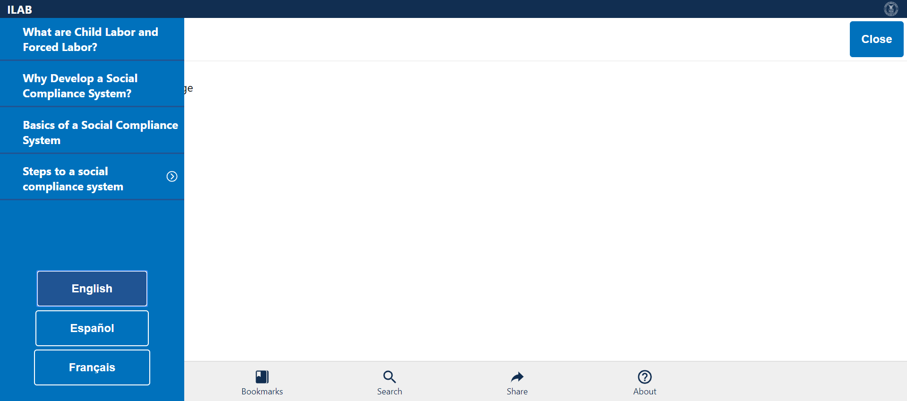
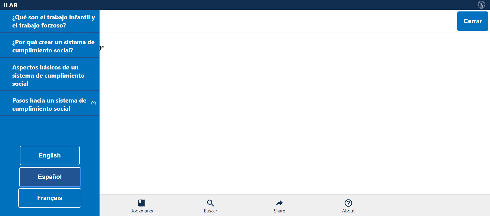
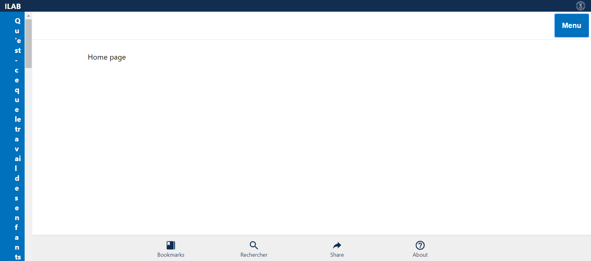
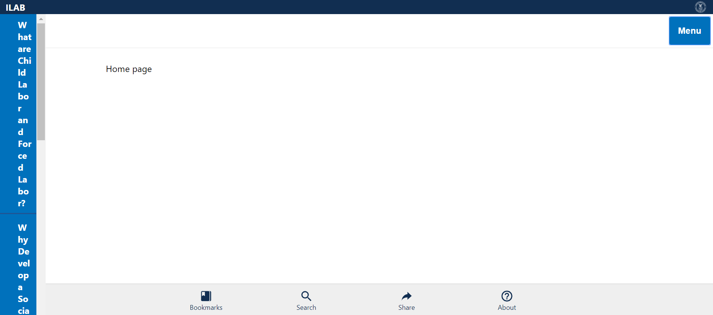
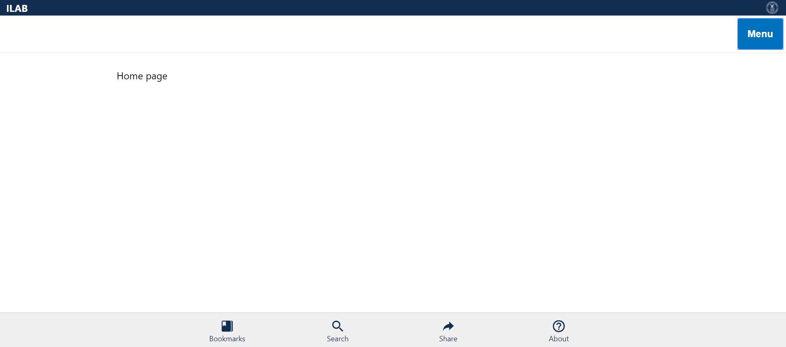

Tests
10 test(s) passed
0 test(s) failed, 0 others
Steps
204 step(s) passed
0 step(s) failed, 194 others
Tests
-
Verify Language Mar 12, 2019 10:36:41 AM passMar 12, 2019 10:36:41 AM Mar 12, 2019 10:36:47 AM 0h 0m 5s+769msVerify if the correct language is selected and displayed
Status Timestamp Details check_circle 10:36:41 AM Comply Chain Logo is Displayed info_outline 10:36:42 AM 
check_circle 10:36:42 AM ILAB is displayed info_outline 10:36:42 AM check_circle 10:36:42 AM MENU is Displayed info_outline 10:36:43 AM 
check_circle 10:36:44 AM MENU is opened Successfully info_outline 10:36:44 AM 
check_circle 10:36:44 AM English Language Button is displayed info_outline 10:36:45 AM  check_circle 10:36:45 AM English Language is Selected and Validated from URL info_outline 10:36:45 AM check_circle 10:36:45 AM Español Language Button is displayed info_outline 10:36:45 AM check_circle 10:36:46 AM Español Language is Selected and Validated from URL info_outline 10:36:46 AM 
check_circle 10:36:46 AM Français Language Button is displayed info_outline 10:36:46 AM check_circle 10:36:46 AM Français Language is Selected and Validated from URL info_outline 10:36:47 AM 
check_circle 10:36:47 AM MENU is closed Successfully info_outline 10:36:47 AM check_circle 10:36:47 AM LanguagesVerification Test Case PASSED -
Verify Menu in English Mar 12, 2019 10:36:53 AM passMar 12, 2019 10:36:53 AM Mar 12, 2019 10:37:00 AM 0h 0m 6s+815msVerify Menu - Topics and Language Items in English
Status Timestamp Details check_circle 10:36:53 AM Comply Chain Logo is Displayed info_outline 10:36:53 AM 
check_circle 10:36:53 AM ILAB is displayed info_outline 10:36:54 AM 
check_circle 10:36:54 AM MENU is Displayed info_outline 10:36:54 AM check_circle 10:36:55 AM MENU is opened Successfully info_outline 10:36:55 AM 
check_circle 10:36:55 AM What are Child Labor and Forced Labor? link is displayed info_outline 10:36:56 AM 
check_circle 10:36:56 AM What are Child Labor and Forced Labor? link Verified info_outline 10:36:56 AM check_circle 10:36:56 AM Why Develop a Social Compliance System? link is displayed info_outline 10:36:56 AM check_circle 10:36:56 AM Why Develop a Social Compliance System? link Verified info_outline 10:36:57 AM 
check_circle 10:36:57 AM Basics of a Social Compliance System link is displayed info_outline 10:36:57 AM check_circle 10:36:57 AM Basics of a Social Compliance System link Verified info_outline 10:36:57 AM check_circle 10:36:58 AM Steps to a social compliance system is displayed info_outline 10:36:58 AM 
check_circle 10:36:58 AM Steps to a social compliance system Verified with Expandable Arrow Mark info_outline 10:36:58 AM check_circle 10:36:58 AM English Language Button is displayed and Verfied info_outline 10:36:59 AM 
check_circle 10:36:59 AM Español Language Button is displayed and Verfied info_outline 10:36:59 AM check_circle 10:36:59 AM Français Language Button is displayed and Verfied info_outline 10:36:59 AM check_circle 10:37:00 AM MENU is closed Successfully info_outline 10:37:00 AM check_circle 10:37:00 AM MenuVerification_English Test Case PASSED -
Verify Menu in Español Mar 12, 2019 10:37:06 AM passMar 12, 2019 10:37:06 AM Mar 12, 2019 10:37:14 AM 0h 0m 8s+173msVerify Menu - Topics and Language Items in Español
Status Timestamp Details check_circle 10:37:06 AM Comply Chain Logo is Displayed info_outline 10:37:06 AM 
check_circle 10:37:06 AM ILAB is displayed info_outline 10:37:06 AM check_circle 10:37:06 AM Menú is Displayed info_outline 10:37:07 AM 
check_circle 10:37:09 AM Menú is opened Successfully info_outline 10:37:09 AM 
check_circle 10:37:09 AM ¿Qué son el trabajo infantil y el trabajo forzoso? link is displayed info_outline 10:37:09 AM check_circle 10:37:09 AM ¿Qué son el trabajo infantil y el trabajo forzoso? link Verified info_outline 10:37:10 AM 
check_circle 10:37:10 AM ¿Por qué crear un sistema de cumplimiento social? link is displayed info_outline 10:37:10 AM check_circle 10:37:10 AM ¿Por qué crear un sistema de cumplimiento social? link Verified info_outline 10:37:11 AM 
check_circle 10:37:11 AM Aspectos básicos de un sistema de cumplimiento social link is displayed info_outline 10:37:11 AM check_circle 10:37:11 AM Aspectos básicos de un sistema de cumplimiento social link Verified info_outline 10:37:11 AM check_circle 10:37:11 AM Pasos hacia un sistema de cumplimiento social is displayed info_outline 10:37:12 AM 
check_circle 10:37:12 AM Pasos hacia un sistema de cumplimiento social Verified with Expandable Arrow Mark info_outline 10:37:12 AM check_circle 10:37:12 AM English Language Button is displayed and Verfied info_outline 10:37:12 AM check_circle 10:37:12 AM Español Language Button is displayed and Verfied info_outline 10:37:13 AM  check_circle 10:37:13 AM Français Language Button is displayed and Verfied info_outline 10:37:13 AM check_circle 10:37:13 AM Menú is closed Successfully info_outline 10:37:14 AM 
check_circle 10:37:14 AM MenuVerification_Español Test Case PASSED -
Verify Menu in Français Mar 12, 2019 10:37:19 AM passMar 12, 2019 10:37:19 AM Mar 12, 2019 10:37:27 AM 0h 0m 7s+849msVerify Menu - Topics and Language Items in Français
Status Timestamp Details check_circle 10:37:19 AM Comply Chain Logo is Displayed info_outline 10:37:20 AM 
check_circle 10:37:20 AM ILAB is displayed info_outline 10:37:20 AM check_circle 10:37:20 AM Menu is Displayed info_outline 10:37:20 AM check_circle 10:37:23 AM Menú is opened Successfully info_outline 10:37:23 AM 
check_circle 10:37:23 AM Qu'est-ce que le travail des enfants et le travail forcé ? link is displayed info_outline 10:37:23 AM check_circle 10:37:24 AM Qu'est-ce que le travail des enfants et le travail forcé ? link Verified info_outline 10:37:24 AM 
check_circle 10:37:24 AM Pourquoi élaborer un système de conformité sociale ? link is displayed info_outline 10:37:24 AM check_circle 10:37:24 AM Pourquoi élaborer un système de conformité sociale ? link Verified info_outline 10:37:25 AM 
check_circle 10:37:25 AM Fondements d’un système de conformité sociale link is displayed info_outline 10:37:25 AM check_circle 10:37:25 AM Fondements d’un système de conformité sociale link Verified info_outline 10:37:25 AM check_circle 10:37:25 AM Étapes vers un système de conformité sociale is displayed info_outline 10:37:26 AM check_circle 10:37:26 AM Étapes vers un système de conformité sociale Verified with Expandable Arrow Mark info_outline 10:37:26 AM 
check_circle 10:37:26 AM English Language Button is displayed and Verfied info_outline 10:37:26 AM check_circle 10:37:26 AM Español Language Button is displayed and Verfied info_outline 10:37:26 AM check_circle 10:37:26 AM Français Language Button is displayed and Verfied info_outline 10:37:27 AM  check_circle 10:37:27 AM Menu is closed Successfully info_outline 10:37:27 AM check_circle 10:37:27 AM MenuVerification_Français Test Case PASSED -
Verify Steps in English Mar 12, 2019 10:37:33 AM passMar 12, 2019 10:37:33 AM Mar 12, 2019 10:37:45 AM 0h 0m 12s+155msVerify Step Items in English
Status Timestamp Details check_circle 10:37:33 AM Comply Chain Logo is Displayed info_outline 10:37:33 AM 
check_circle 10:37:33 AM ILAB is displayed info_outline 10:37:34 AM 
check_circle 10:37:34 AM MENU is Displayed info_outline 10:37:34 AM check_circle 10:37:35 AM MENU is opened Successfully info_outline 10:37:35 AM 
check_circle 10:37:35 AM What are Child Labor and Forced Labor? link is displayed info_outline 10:37:36 AM 
check_circle 10:37:36 AM What are Child Labor and Forced Labor? link Verified info_outline 10:37:36 AM check_circle 10:37:36 AM Why Develop a Social Compliance System? link is displayed info_outline 10:37:36 AM check_circle 10:37:36 AM Why Develop a Social Compliance System? link Verified info_outline 10:37:37 AM 
check_circle 10:37:37 AM Basics of a Social Compliance System link is displayed info_outline 10:37:37 AM check_circle 10:37:37 AM Basics of a Social Compliance System link Verified info_outline 10:37:37 AM check_circle 10:37:37 AM Steps to a social compliance system is displayed info_outline 10:37:38 AM 
check_circle 10:37:38 AM Steps to a social compliance system Verified with Expandable Arrow Mark info_outline 10:37:38 AM check_circle 10:37:38 AM Steps to a social compliance system Expanded info_outline 10:37:38 AM check_circle 10:37:38 AM Step 1: Engage Stakeholders and Partners is displayed info_outline 10:37:39 AM 
check_circle 10:37:39 AM Step 1: Engage Stakeholders and Partners is Verified info_outline 10:37:39 AM check_circle 10:37:39 AM Step 2: Assess Risks And Impacts is displayed info_outline 10:37:39 AM check_circle 10:37:39 AM Step 2: Assess Risks And Impacts is Verified info_outline 10:37:40 AM 
check_circle 10:37:40 AM Step 3: Develop a Code of Conduct displayed info_outline 10:37:40 AM check_circle 10:37:40 AM Step 3: Develop a Code of Conduct Verified info_outline 10:37:40 AM check_circle 10:37:40 AM Step 4: Communicate and Train across your Supply Chain displayed info_outline 10:37:41 AM 
check_circle 10:37:41 AM Step 4: Communicate and Train across your Supply Chain Verified info_outline 10:37:41 AM check_circle 10:37:41 AM Step 5: Monitor Compliance is displayed info_outline 10:37:42 AM 
check_circle 10:37:42 AM Step 5: Monitor Compliance Verified info_outline 10:37:42 AM check_circle 10:37:42 AM Step 6: Remediate Violations displayed info_outline 10:37:42 AM check_circle 10:37:42 AM Step 6: Remediate Violations Verified info_outline 10:37:43 AM 
check_circle 10:37:43 AM Step 7: Independent Review displayed info_outline 10:37:43 AM check_circle 10:37:43 AM Step 7: Independent Review Verified info_outline 10:37:43 AM check_circle 10:37:44 AM Step 8: Report Performance displayed info_outline 10:37:44 AM 
check_circle 10:37:44 AM Step 8: Report Performance Verified info_outline 10:37:44 AM check_circle 10:37:44 AM Steps to a social compliance system Collapsed info_outline 10:37:45 AM  check_circle 10:37:45 AM MENU is closed Successfully info_outline 10:37:45 AM check_circle 10:37:45 AM MenuVerification_English Test Case PASSED -
Verify Steps in Español Mar 12, 2019 10:37:51 AM passMar 12, 2019 10:37:51 AM Mar 12, 2019 10:38:04 AM 0h 0m 13s+513msVerify Step Items in Español
Status Timestamp Details check_circle 10:37:51 AM Comply Chain Logo is Displayed info_outline 10:37:51 AM 
check_circle 10:37:51 AM ILAB is displayed info_outline 10:37:51 AM check_circle 10:37:51 AM Menú is Displayed info_outline 10:37:52 AM 
check_circle 10:37:54 AM Menú is opened Successfully info_outline 10:37:54 AM 
check_circle 10:37:54 AM ¿Qué son el trabajo infantil y el trabajo forzoso? link is displayed info_outline 10:37:55 AM 
check_circle 10:37:55 AM ¿Qué son el trabajo infantil y el trabajo forzoso? link Verified info_outline 10:37:55 AM check_circle 10:37:55 AM ¿Por qué crear un sistema de cumplimiento social? link is displayed info_outline 10:37:55 AM check_circle 10:37:55 AM ¿Por qué crear un sistema de cumplimiento social? link Verified info_outline 10:37:56 AM 
check_circle 10:37:56 AM Aspectos básicos de un sistema de cumplimiento social link is displayed info_outline 10:37:56 AM check_circle 10:37:56 AM Aspectos básicos de un sistema de cumplimiento social link Verified info_outline 10:37:56 AM check_circle 10:37:56 AM Pasos hacia un sistema de cumplimiento social is displayed info_outline 10:37:57 AM 
check_circle 10:37:57 AM Pasos hacia un sistema de cumplimiento social Verified with Expandable Arrow Mark info_outline 10:37:57 AM check_circle 10:37:57 AM Steps to a social compliance system Expanded info_outline 10:37:57 AM check_circle 10:37:57 AM Primer paso: Participación de las partes interesadas y los socios is displayed info_outline 10:37:58 AM 
check_circle 10:37:58 AM Primer paso: Participación de las partes interesadas y los socios is Verified info_outline 10:37:58 AM check_circle 10:37:58 AM Segundo paso: Evaluación de riesgos e impacto is displayed info_outline 10:37:59 AM 
check_circle 10:37:59 AM Segundo paso: Evaluación de riesgos e impacto is Verified info_outline 10:37:59 AM check_circle 10:37:59 AM Tercer paso: Formulación de un código de conducta is displayed info_outline 10:37:59 AM check_circle 10:37:59 AM Tercer paso: Formulación de un código de conducta Verified info_outline 10:38:00 AM 
check_circle 10:38:00 AM Cuarto paso: Comunicación y capacitación en la cadena de suministro is displayed info_outline 10:38:00 AM check_circle 10:38:00 AM Cuarto paso: Comunicación y capacitación en la cadena de suministro Verified info_outline 10:38:00 AM check_circle 10:38:00 AM Quinto paso: Vigilancia y seguimiento del cumplimiento is displayed info_outline 10:38:01 AM 
check_circle 10:38:01 AM Quinto paso: Vigilancia y seguimiento del cumplimiento Verified info_outline 10:38:01 AM check_circle 10:38:01 AM Sexto paso: Remediación de infracciones is displayed info_outline 10:38:01 AM check_circle 10:38:01 AM Sexto paso: Remediación de infracciones Verified info_outline 10:38:02 AM 
check_circle 10:38:02 AM Séptimo paso: Examen independiente displayed info_outline 10:38:02 AM check_circle 10:38:02 AM Séptimo paso: Examen independiente Verified info_outline 10:38:03 AM 
check_circle 10:38:03 AM Octavo paso: Notificación del desempeño is displayed info_outline 10:38:03 AM check_circle 10:38:03 AM Octavo paso: Notificación del desempeño Verified info_outline 10:38:03 AM check_circle 10:38:03 AM Steps to a social compliance system Collapsed info_outline 10:38:04 AM 
check_circle 10:38:04 AM Menú is closed Successfully info_outline 10:38:04 AM check_circle 10:38:04 AM MenuVerification_Español Test Case PASSED -
Verify Steps in Français Mar 12, 2019 10:38:10 AM passMar 12, 2019 10:38:10 AM Mar 12, 2019 10:38:23 AM 0h 0m 13s+362msVerify Step Items in Français
Status Timestamp Details check_circle 10:38:10 AM Comply Chain Logo is Displayed info_outline 10:38:10 AM 
check_circle 10:38:10 AM ILAB is displayed info_outline 10:38:11 AM 
check_circle 10:38:11 AM Menu is Displayed info_outline 10:38:11 AM check_circle 10:38:13 AM Menú is opened Successfully info_outline 10:38:14 AM 
check_circle 10:38:14 AM Qu'est-ce que le travail des enfants et le travail forcé ? link is displayed info_outline 10:38:14 AM check_circle 10:38:14 AM Qu'est-ce que le travail des enfants et le travail forcé ? link Verified info_outline 10:38:14 AM check_circle 10:38:14 AM Pourquoi élaborer un système de conformité sociale ? link is displayed info_outline 10:38:15 AM 
check_circle 10:38:15 AM Pourquoi élaborer un système de conformité sociale ? link Verified info_outline 10:38:15 AM check_circle 10:38:15 AM Fondements d’un système de conformité sociale link is displayed info_outline 10:38:15 AM check_circle 10:38:15 AM Fondements d’un système de conformité sociale link Verified info_outline 10:38:16 AM 
check_circle 10:38:16 AM Étapes vers un système de conformité sociale is displayed info_outline 10:38:16 AM check_circle 10:38:16 AM Étapes vers un système de conformité sociale Verified with Expandable Arrow Mark info_outline 10:38:16 AM check_circle 10:38:16 AM Steps to a social compliance system Expanded info_outline 10:38:17 AM 
check_circle 10:38:17 AM Première étape: faire participer les parties prenantes et les partenaires is displayed info_outline 10:38:17 AM check_circle 10:38:17 AM Première étape: faire participer les parties prenantes et les partenaires is Verified info_outline 10:38:17 AM check_circle 10:38:17 AM Deuxième étape: Évaluer les risques et les incidences is displayed info_outline 10:38:18 AM 
check_circle 10:38:18 AM Deuxième étape: Évaluer les risques et les incidences is Verified info_outline 10:38:18 AM check_circle 10:38:18 AM Troisième étape: élaborer un code de conduite is displayed info_outline 10:38:18 AM check_circle 10:38:18 AM Troisième étape: élaborer un code de conduite Verified info_outline 10:38:19 AM 
check_circle 10:38:19 AM Step 4: Quatrième étape: communiquer et former dans l'ensemble de votre chaîne d'approvisionnement is displayed info_outline 10:38:19 AM check_circle 10:38:19 AM Quatrième étape: communiquer et former dans l'ensemble de votre chaîne d'approvisionnement Verified info_outline 10:38:19 AM check_circle 10:38:19 AM Cinquième étape: Surveiller la conformité is displayed info_outline 10:38:20 AM 
check_circle 10:38:20 AM Cinquième étape: Surveiller la conformité Verified info_outline 10:38:20 AM check_circle 10:38:20 AM Sixième étape: Réparer les infractions is displayed info_outline 10:38:21 AM 
check_circle 10:38:21 AM Sixième étape: Réparer les infractions info_outline 10:38:21 AM check_circle 10:38:21 AM Septième étape: Examen indépendant is displayed info_outline 10:38:21 AM check_circle 10:38:21 AM Septième étape: Examen indépendant Verified info_outline 10:38:22 AM 
check_circle 10:38:22 AM Huitième étape: Rendre compte des résultats is displayed info_outline 10:38:22 AM check_circle 10:38:22 AM Huitième étape: Rendre compte des résultats Verified info_outline 10:38:22 AM check_circle 10:38:22 AM Steps to a social compliance system Collapsed info_outline 10:38:23 AM 
check_circle 10:38:23 AM Menu is closed Successfully info_outline 10:38:23 AM check_circle 10:38:23 AM MenuVerification_Français Test Case PASSED -
Verify Home Page in English Mar 12, 2019 10:38:29 AM passMar 12, 2019 10:38:29 AM Mar 12, 2019 10:38:35 AM 0h 0m 6s+7msVerify Home Page - Logo, Header, Home Page, Menu, Bottom bar Items in English
Status Timestamp Details check_circle 10:38:29 AM Comply Chain Logo is Displayed info_outline 10:38:29 AM 
check_circle 10:38:29 AM ILAB is displayed info_outline 10:38:29 AM check_circle 10:38:29 AM Home Page Header is displayed info_outline 10:38:30 AM 
check_circle 10:38:30 AM MENU is Displayed info_outline 10:38:30 AM check_circle 10:38:31 AM MENU is opened Successfully info_outline 10:38:31 AM 
check_circle 10:38:31 AM MENU is closed Successfully info_outline 10:38:32 AM 
check_circle 10:38:32 AM Bookmarks link is displayed info_outline 10:38:32 AM check_circle 10:38:32 AM Bookmarks link Verified info_outline 10:38:33 AM  check_circle 10:38:33 AM Search link is displayed info_outline 10:38:33 AM check_circle 10:38:33 AM Search link Verified info_outline 10:38:33 AM check_circle 10:38:33 AM Share link is displayed info_outline 10:38:34 AM 
check_circle 10:38:34 AM Share link Verified info_outline 10:38:34 AM check_circle 10:38:34 AM About link is displayed info_outline 10:38:34 AM check_circle 10:38:34 AM About link Verified info_outline 10:38:35 AM 
check_circle 10:38:35 AM HomePageVerification_English Test Case PASSED -
Verify Home Page in Español Mar 12, 2019 10:38:40 AM passMar 12, 2019 10:38:40 AM Mar 12, 2019 10:38:48 AM 0h 0m 7s+145msVerify Home Page - Logo, Header, Home Menu, Bottom bar Items in Español
Status Timestamp Details check_circle 10:38:40 AM Comply Chain Logo is Displayed info_outline 10:38:41 AM 
check_circle 10:38:41 AM ILAB is displayed info_outline 10:38:41 AM check_circle 10:38:41 AM Home Page Header is displayed info_outline 10:38:41 AM check_circle 10:38:41 AM Menú is Displayed info_outline 10:38:42 AM 
check_circle 10:38:44 AM Menú is opened Successfully info_outline 10:38:44 AM 
check_circle 10:38:44 AM Menú is closed Successfully info_outline 10:38:45 AM 
check_circle 10:38:45 AM Bookmarks link is displayed info_outline 10:38:45 AM check_circle 10:38:45 AM Bookmarks link Verified info_outline 10:38:45 AM check_circle 10:38:45 AM Buscar link is displayed info_outline 10:38:46 AM 
check_circle 10:38:46 AM Buscar link Verified info_outline 10:38:46 AM check_circle 10:38:46 AM Share link is displayed info_outline 10:38:46 AM check_circle 10:38:46 AM Share link Verified info_outline 10:38:47 AM 
check_circle 10:38:47 AM About link is displayed info_outline 10:38:47 AM check_circle 10:38:47 AM About link Verified info_outline 10:38:48 AM 
check_circle 10:38:48 AM HomePageVerification_Español Test Case PASSED -
Verify Home Page in Français Mar 12, 2019 10:38:53 AM passMar 12, 2019 10:38:53 AM Mar 12, 2019 10:39:00 AM 0h 0m 7s+220msVerify Home Page - Logo, Header, Home Menu, Bottom bar Items in Français
Status Timestamp Details check_circle 10:38:53 AM Comply Chain Logo is Displayed info_outline 10:38:54 AM 
check_circle 10:38:54 AM ILAB is displayed info_outline 10:38:54 AM check_circle 10:38:54 AM Home Page Header is displayed info_outline 10:38:54 AM check_circle 10:38:54 AM Menu is Displayed info_outline 10:38:55 AM 
check_circle 10:38:57 AM Menú is opened Successfully info_outline 10:38:57 AM 
check_circle 10:38:57 AM Menu is closed Successfully info_outline 10:38:58 AM 
check_circle 10:38:58 AM Bookmarks link is displayed info_outline 10:38:58 AM check_circle 10:38:58 AM Bookmarks link Verified info_outline 10:38:58 AM check_circle 10:38:58 AM Rechercher link is displayed info_outline 10:38:59 AM 
check_circle 10:38:59 AM Rechercher link Verified info_outline 10:38:59 AM check_circle 10:38:59 AM Share link is displayed info_outline 10:39:00 AM 
check_circle 10:39:00 AM Share link Verified info_outline 10:39:00 AM check_circle 10:39:00 AM About link is displayed info_outline 10:39:00 AM check_circle 10:39:00 AM About link Verified info_outline 10:39:00 AM check_circle 10:39:00 AM HomePageVerification_Français Test Case PASSED
info_outline
check_circle
cancel
cancel
error
warning
redo
clear
Dashboard
Tests
10
Steps
398
Start
Mar 12, 2019 10:36:34 AM
End
Mar 12, 2019 10:39:01 AM
Time Taken
0h 2m 27s+232ms
Environment
| Name | Value |
|---|---|
| Project Name | DOL COMPLY CHAIN |
| User Name | KAVITHA MALLIPEDDI |
| Automation Tool | SELENIUM/JAVA |
| Java Version | 1.8.0_191 |
| Operating System | WINDOWS 10 |
| Host Name | DESKTOP-I4MRD09 |
| IP Address | 192.168.1.103 |
| Environment | TEST |